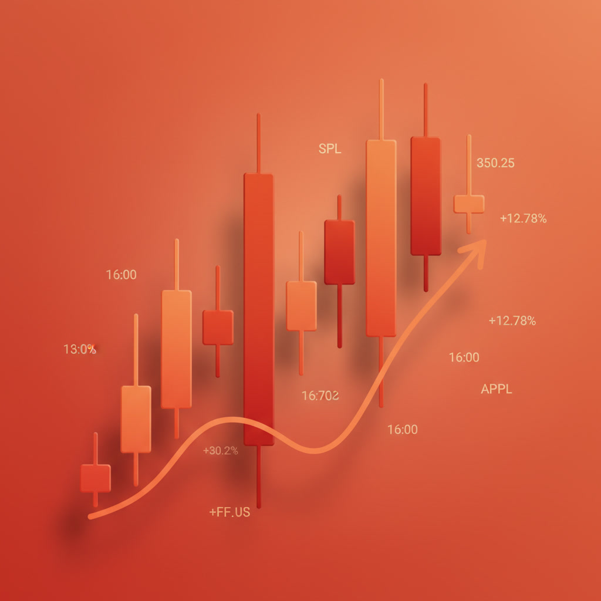
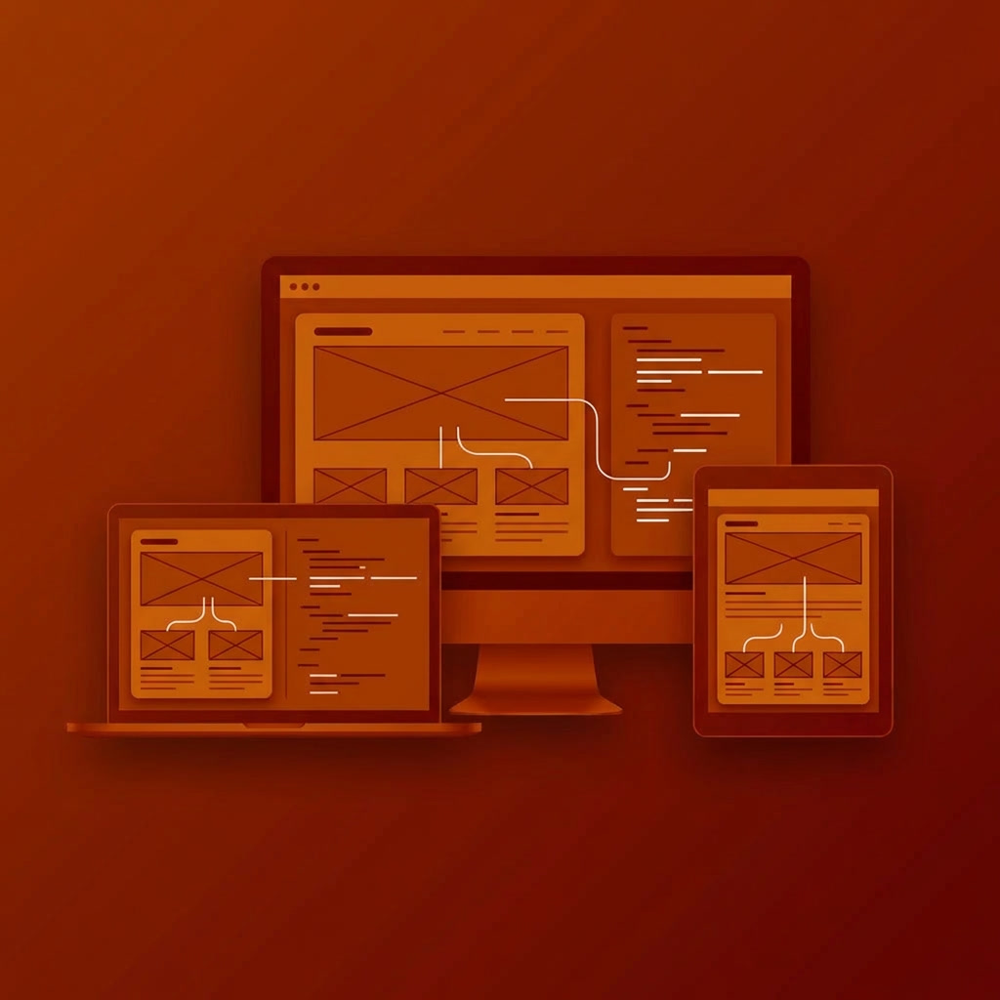

I’m a content creator who enjoys making things people don’t scroll past. I create videos for YouTube,
TikTok, and social media stories, and I write blogs around tech, travel, and bartending — basically, the
stuff I genuinely love.
One day I’m breaking down tech in a simple, no-jargon way, the next I’m sharing travel moments or mixing
a cocktail that actually looks as good as it tastes. My content is all about keeping things fun, real,
and relatable, while still helping brands connect with the right audience.
If you’re looking for creative content that feels natural, not salesy, and fits perfectly into today’s
social platforms — let’s work together and make something awesome.
My Youtube Videos:
Web Design
I’m a web designer who focuses on creating thoughtful, well-crafted digital experiences that feel
intuitive, polished, and purposeful. Every project starts with understanding the user — how they
navigate, what they notice, and what makes them stay. From there, I design clean, responsive layouts
that look great on any screen and guide users naturally through the experience.
I work with modern design systems, proven tools, and evolving web standards, choosing what best fits
each project rather than forcing trends where they don’t belong. My approach balances strong visual
identity with usability, performance, and accessibility — because great design should feel effortless to
use.
If you’re looking for a designer who cares about details, understands modern aesthetics, and knows how
to turn ideas into websites that feel professional, reliable, and human, I’d love to collaborate.
Web Development
I’m a web developer who builds reliable, scalable websites and web applications with a strong focus on
performance, maintainability, and real-world usability. I enjoy turning designs into clean,
well-structured code that works smoothly across devices and browsers.
I work with modern frameworks, APIs, and development tools, while also respecting proven technologies
that still do the job best. Whether it’s building responsive interfaces, integrating back-end logic, or
optimizing load times, my approach is always practical and intentional — choosing solutions that make
sense for the project today and scale well for tomorrow.
If you’re looking for a developer who values clean code, thoughtful architecture, and long-term
reliability, I’m here to help bring your product to life.
Automation
I build intelligent automations that make your business more reliable, scalable, and efficient. My focus
is on creating systems that perform flawlessly, are easy to maintain, and deliver tangible, real-world
value. I enjoy turning complex, repetitive workflows into clean, well-structured processes that run
smoothly in the background.
I work with modern platforms, APIs, and scripting tools, while also leveraging proven, stable
technologies that are right for the task. Whether it’s automating data syncing, streamlining customer
onboarding, generating dynamic reports, or connecting disparate apps, my approach is always practical
and intentional—choosing solutions that solve the immediate need and adapt effortlessly for tomorrow.
If you’re looking for an automation specialist who values robust architecture, clear documentation, and
long-term system reliability, I’m here to help bring your operational vision to life.
Data Analysis
I transform raw data into clear insights that make your business more informed, strategic, and confident.
My focus is on delivering analysis that is accurate, actionable, and built for real-world
decision-making. I enjoy turning complex datasets into clean, compelling narratives that communicate
effectively to both technical teams and business leaders.
I work with modern analytics tools, visualization platforms, and statistical methods, while respecting
the foundational principles of data integrity and sound methodology. Whether it's uncovering customer
behavior patterns, optimizing operational metrics, measuring campaign performance, or building
dashboards that track key outcomes, my approach is always practical and intentional—choosing the right
technique to answer the question today and building a foundation that scales for future discovery.
If you're looking for an analyst who values methodological rigor, intuitive storytelling with data, and
insights that drive long-term growth, I'm here to help bring clarity to your information.
Cloud Services
I build and manage cloud infrastructures that make your applications reliable, scalable, and secure from
day one. My focus is on deployments that prioritize performance, resilience, and operational clarity. I
enjoy turning architectural plans into clean, well-orchestrated environments that run smoothly and can
be managed with confidence.
I work with modern cloud platforms, infrastructure-as-code tools, and DevOps practices, while also
applying time-tested principles of systems design and security. Whether it's migrating legacy
applications, deploying scalable microservices, automating CI/CD pipelines, or implementing robust
monitoring and backup strategies, my approach is always practical and intentional—choosing solutions
that meet current demands and evolve gracefully with future growth.
If you're looking for an engineer who values reproducible infrastructure, resilient architecture, and
long-term operational stability, I'm here to help bring your systems to the cloud with precision.
My Projects
QR Generator
Imagine! You have impressive social media profile, but sharing it with someone is hectic. But with
this application you can easily generate a QR code for your social media profile and share it with
anyone so that they can check it out instantly without every touching those buttons on their
keyboard. Isn't it amazing?

New IPO Alert
Isn't it frustrating when there are some new IPOs listed, but you never knew about it and you missed
the opportunity to make some profit. Don't worry now! Because you can use this system to subscribe
for notification which will inform you to apply them whenever any new IPO has been listed.
Inventory Management System
Custom-built responsive inventory system designed to manage items, quantities, and records with a
clean UI.

Responsive Website
A modern, fully responsive personal website built to showcase my projects, skills, and professional
journey.
Under Construction
This project is being developed and soon will be released and can be accessible from the link
below.
Under Construction
This project is being developed and soon will be released and can be accessible from the link
below.
About Me
Full-Stack Developer
Former Associate Software Engineer at Deerwalk Inc., currently
known as Cedar Gate
Technologies.
I started my career there as an intern on 2nd, September 2019, and became full-time on
4th, May 2020, and worked until 23rd, February 2021, before I decided to pursue
a Master of Information Technology in Australia.
During my tenure there as an experienced software engineer,
I designed and developed scalable web applications along with RESTful APIs.
I am proficient in Java, Spring Boot, JavaScript, Angular, and React.
I have hands-on experience in cloud services like AWS S3, SQS, CloudWatch, and Lambda.
I have experience working with Grails, .NET, and Azure Test Plan.
I have a strong background in the MySQL Database Management System.
With a solid understanding of Agile methodologies, along with Scrum and test-driven development, I was
able to deliver high-quality software solutions by collaborating with cross-functional teams to conduct
code reviews.
.jpg)
.jpg)